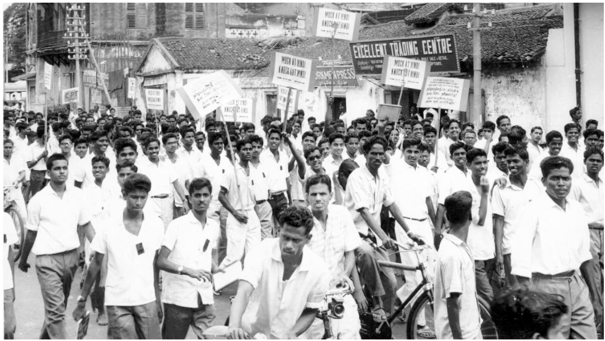

1965The anti-Hindi imposition agitation
The Constitution gave English a fifteen-year grace period before Hindi would take over as the language of Union business. In Tamil-speaking Madras State, that deadline — 26 January 1965 — was read as the day Tamil speakers would be shut out of central government jobs. Prime Minister Nehru had promised otherwise, but the 1963 Official Languages Act said only that English may continue. A spoken promise, students and the DMK argued, was weaker than the words of a law.
DMK leaders, including C. N. Annadurai, were detained under preventive laws before Republic Day. On 25 January, a procession in Madurai was attacked and unrest spread across the state. A man named Chinnasamy burned himself in Tiruchirappalli; others followed. The government imposed Section 144, deployed paramilitary forces, and police opened fire in Madurai, Tiruchirappalli, Coimbatore and Pollachi.
The crisis ended not in a courtroom but in a political promise: Prime Minister Shastri reaffirmed Nehru’s word on 11 February 1965, two Union ministers offered to resign in protest, and Parliament amended the Act in 1967 to entrench English indefinitely. The ruling party lost Madras State that same year. The protesters won the argument. What the record does not show is any public inquiry into how the state used force to suppress them.
What followed: no inquiry found, no prosecution found. The 1963 Act was amended in 1967 — a political settlement, with the use of force left unexamined.